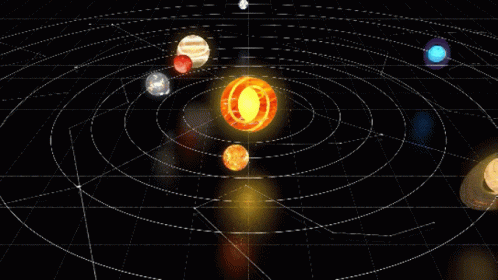

Los planetas del sistema solar

Estas son algunas de las caracteristicas de los planetas del sistema
solar:
- Mercurio: además de ser el planeta más cercano al Sol, Mercurio es también el más pequeño del sistema solar. Al igual que la Tierra, Venus y Marte, es un planeta terrestre o rocoso.
- Venus: es el planeta más parecido a la Tierra en cuanto a tamaño, composición y masa. Pero su temperatura y sus condiciones atmosféricas son radicalmente diferentes e incompatibles con la vida.
- Tierra: es el mayor de los planetas rocosos del sistema solar y una de sus características, que podemos observar la mayoría de noches, es que cuenta con su propio satélite, la Luna.
- Marte: el planeta rojo es el segundo menor del sistema solar y cuenta con dos satélites: Fobos y Deimos. Recientemente, se ha descubierto que Marte también contó en algún momento con agua en estado líquido.
- Saturno: es el único planeta con un sistema de anillos que podemos ver desde la Tierra y, probablemente, el que cuenta con más satélites. Es también un gigante gaseoso, y es el segundo mayor en tamaño de nuestro sistema.
- Urano: es un gigante gaseoso pero, a diferencia de Júpiter y Saturno, que están formados mayormente por helio e hidrógeno, Urano está compuesto principalmente por agua congelada, metano y amoniaco.
- Neptuno: se trata del planeta más alejado del Sol, y por ello es también el más frío. Se trata de otro gigante gaseoso, el menor de los cuatro, y está compuesto por los mismos elementos principales que Urano.